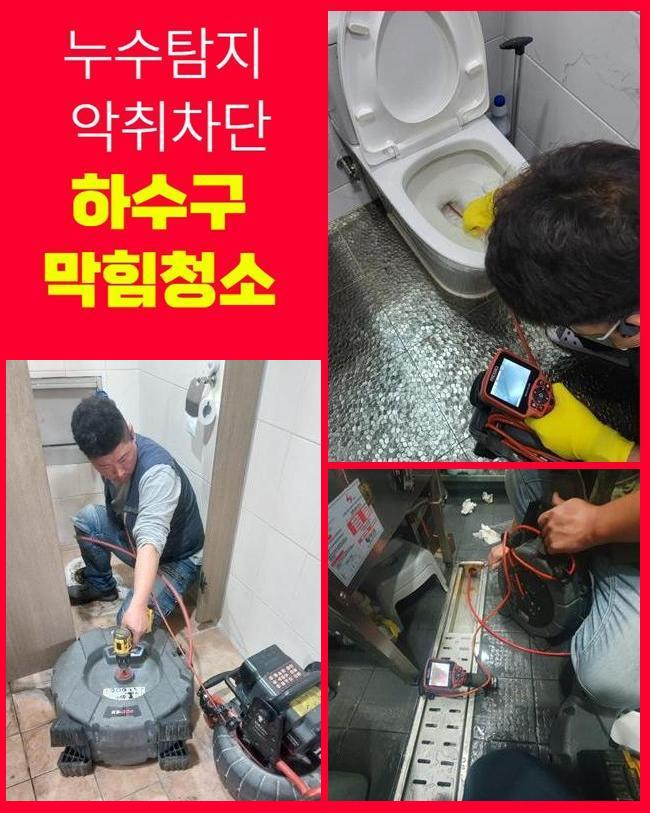
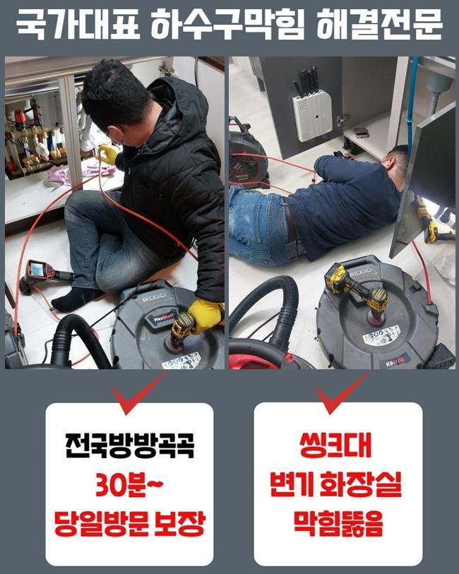
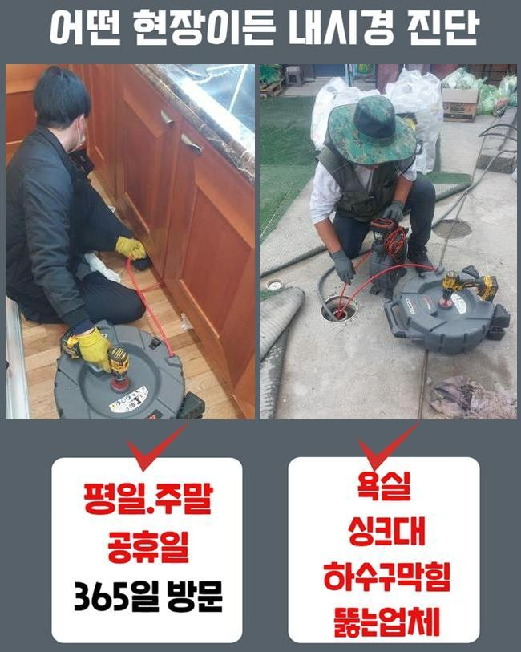
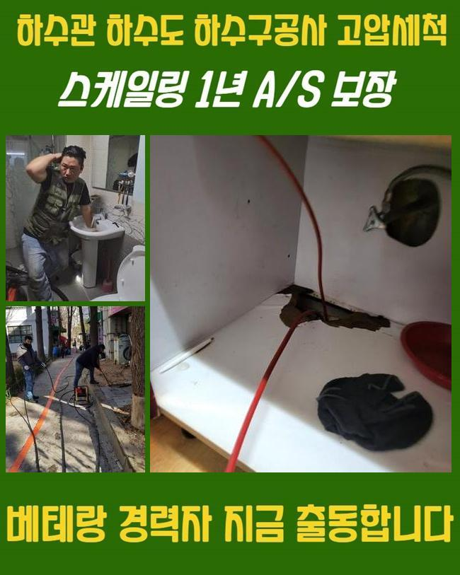
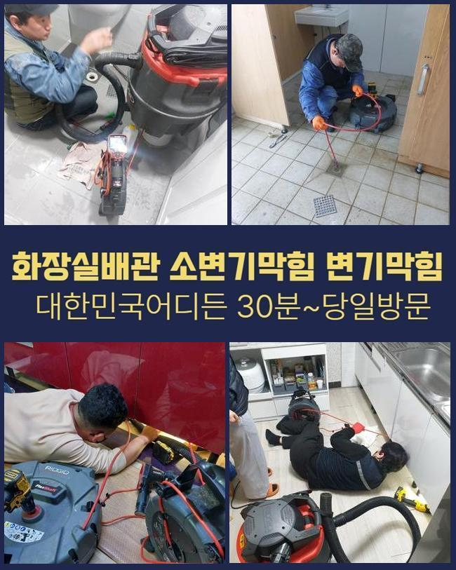

🏠 용인 신봉동화장실역류 고기동 배수구뚫기 설비출장
용인 신봉동 하수구막힘 전문 시공 후기

📋 작업 개요
- 위치: 용인 신봉동, 신봉동, 용인
- 서비스 유형: 하수구막힘, 배관막힘, 누수수리, 역류해결, 뚫는업체, 배관청소, 고압세척
- 작업 일시: 2025. 1. 27. 21:20
- 업체명: 하수구수사대 (010-5615-2118)
🔍 문제 상황
용인 신봉동화장실역류 고기동 배수구뚫기 설비출장
2주전에 하수도가 막혀 여러 피해를 받으셨던 고객분에게 문의가 들어왔는데요
고객분은 관로와 관련한 전문지식까진 아니였지만 나름의 대처법을 가진 상태였는데요
의뢰인의 경우 캡이나 여타 부품들을 깨끗히하고 문제 위치를 찾으려고 둘러보셨으나 어디쪽이 문제가되는건지 알기가 힘들어 저희업체께 연락을 주셨던 것이였습니다
계신 곳에 내방하니 계속적인 자가적인 조치들로 고생하셨던 것이 눈에 띄었어요
고객들의 경우 까닭들을 알아내기힘든 사례가 많아요
내방해 이곳저곳을 진단하니 안쪽에는 증상은 없는 상태였죠
의뢰자분은 바깥에 위치한 관로에서 원인들이 자리했을 확률들이 높을거라 생각하게 되었어요
더군다나 나무등이 자리하고 있다면 뿌리등이 배수관으로 침투된다거나 이물이 흐를 확률들이 존재합니다
여러가지의 까닭으로 바깥쪽의 관로들이 막혀버렸을 수 있는데요

🔎 원인 분석
💡 전문가 진단: 정밀 진단 장비를 사용하여 슬러지의 고착 여부를 판명하고 타격/세척 작업을 실시했습니다.
고객에게 현상황의 예상되는 원인들에 설명하고 외측을 진단해봐야할 것을 말씀드렸죠
의뢰자께서도 안내드린 내용들을 듣고난 후 중앙관로의 검사절차에 동의했죠
시공을 착수해주기위하여 기계검수도 진행시켰습니다
배수장애의 이유들은 특정이 안돼요
외부설비의 경우 담배꽁초와 같은 주변에서 유입된 이물이 하수관으로 쌓여버려요
외측에 비가 내릴때 외측의 관로등의 상황들을 체크해주지않으면 증세규모는 장담할 수 없어요
또한, 나무의 지면 밑에서부터 침투되는 현장도 종종 있죠
배관들을 휘감거나 심할땐 균열을 생성하는 문제로도 야기시킵니다
이러한 결함 발생 시 유수가 정체되는 탓에 2차적인 피해들이 생기게 될 수 있어요
또한 내식성이 내려가거나 파손에도 흐름들이 불가하여 막히는 사태가 발발합니다

🔧 작업 과정
시간들이 흐르며 하수도가 노후된다면 잔해물이 침전되는 제반이 만들어집니다
끝으로 일반적인 배수장애의 까닭들은 적재적소의 청소들을 신경안써서인데요
때때로 소홀히 하면, 작은 잔해물이 쌓이면서 막히는 상태가 심해질거에요
그러므로 외부라인을 때때로 체크해보고 청소해주는게 미리 조치할 수 있는 괄목할만한 방식으로 작용합니다
수많은 까닭들을 알고서 선제적으로 문제들을 피하는게 1순위에요
내시경으로 외측의 관로등의 상태들을 체크해봤습니다
내시경으로 확인하니 배수관의 군데군데마다 잔해와 기름성분들로 엉망이 된 것이 관찰되었습니다
이와같이 배수관이 막히면 물의 흐름들이 막혀버려 누수되어버리는 사태까지 발발하기에 대처를 실시하는게 중요하겠습니다
검수과정 중 여러 폐기물들이 모인 곳을 포인트로 설정하고 청소해주기로 했답니다
고압수청소를 사용해 오염된 집수설비까지 구석구석 세척해주었죠
덩어리졌던 이물들을 깊은곳에서부터 제거시키니 정체현상을 보이던 하수가 흘렀는데요
초반엔 잔재들이 배출됐고 여러 폐기물들이 나오게되며 조금씩 조속히 본 모습을 되찾았어요
물이 신속히 빠지게되는 모습까지 관찰하며 고객도 해당 과정들을 목격하셨습니다
전 과정이 이행되면서 의뢰자와 얘기하면서 잔해물이 쌓이는 까닭들을 안내하니 고객도 여러 방면으로 질문했어요
이로써 의뢰인분은 관리측면의 중요성들을 인지하게되었고 미래에도 때에 맞춘 검수의 불가피성을 공감했죠
오차없이 청소가 종료되고 하수도가 완전히 바로 잡히면서 의뢰자께서는 배출되는 오수들을 보게되었습니다


✅ 작업 완료
고객분에게도 결과와 관련한 내용을 말씀드리고 미래에도의 관리방식들도 일러드렸습니다
때때로 외부라인을 살피고 상황마다 전문성을 갖춘 해결들을 꾀하는게 합리적이라는 것을 안내드렸어요
결국엔 고객분에게서 불편을 타파하여 안심할 수 있었죠
의뢰인분의 수월한 배수상황에 적신호가 켜지지않도록 편하실 때 저희쪽으로 상담을 진행해보세요



⚠️ 베란다 누수 및 방수 관리 방법
- ✅ 비가 많이 올 때 창틀 주변이나 아래층 천장에 얼룩이 생기는지 정기적으로 확인해 보세요.
- ✅ 우수관 주변 실리콘 마감이 들뜨거나 깨진 틈새가 있는지 손상 여부를 수시로 체크하세요.
- ✅ 베란다 바닥 타일의 줄눈(메지)이 소실되면 그 틈으로 물이 침투하여 누수가 유발됩니다.
- ✅ 누수 의심 증상 발견 시 방치하면 아래층 손실이 커지므로 즉시 전문가의 진단을 받으십시오.
💡 핵심 정리
- 확실한 장비 작업(내시경 점검 및 샤프트 스케일링)으로 원인을 뿌리 뽑습니다.
- 작업 후 1년 이내에 동일한 부위 재발 시 100% 무상 A/S 서비스를 보장합니다.
- 서울 · 경기 · 인천 전 지역에 24시간 언제든 긴급 출동할 수 있도록 항시 대기 중입니다.
❓ 자주 묻는 질문 (FAQ)
🚨 용인 신봉동 하수구막힘 문제로 고민이신가요?
정확한 원인 진단과 확실한 시공으로 재발 없는 해결을 약속드립니다.
24시간 긴급 출동 | 서울 · 경기 · 인천 전지역 | 1년 내 재발 시 무상 A/S